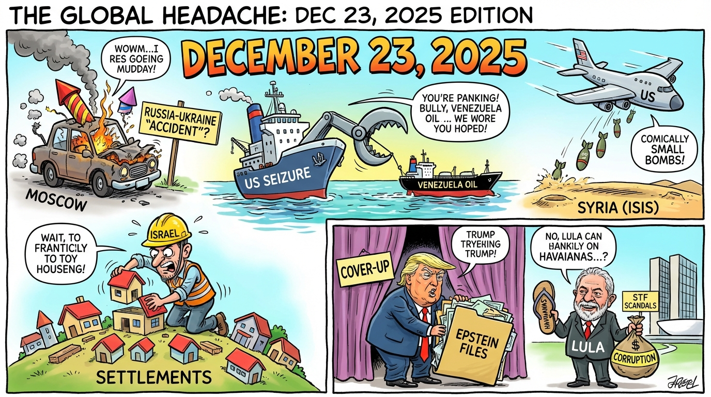

The Daily Globe: Russian General Killed in Suspected Ukrainian Car Bomb Attack, DOJ Epstein Files Release Fuels Cover-Up Claims, and Havaianas Sandals Boycott Over Ad Campaign
Published on 2025-12-23

World
- Russian General Killed in Suspected Ukrainian Car Bomb Attack
Lieutenant General Fanil Sarvarov, head of Russian General Staff's Directorate for Operational Training, killed in Moscow car bomb, suspected Ukrainian involvement, amid stalled peace talks.
- US Coast Guard Intercepts Venezuelan Oil Tanker
Second tanker seized to enforce sanctions, Trump orders blockade, China condemns as violation of international law, oil prices climb.
- Israel Approves 19 New West Bank Settlements
Move to block Palestinian statehood, UN calls illegal, coincides with stalled Gaza ceasefire and reports of Palestinian deaths from cold.
- Deadly Shooting at Bar in South Africa
Nine killed, ten injured in Johannesburg by gunmen, police hunt suspects amid rising gang violence.
- Thailand-Cambodia Border Fighting Escalates
Artillery, airstrikes kill civilians, ASEAN urges restraint as clashes enter third week.
USA
- DOJ Epstein Files Release Fuels Cover-Up Claims
Partially redacted documents released, images including Trump photo temporarily removed, Democrats criticize Trump administration.
- US Airstrikes on Over 70 ISIS Targets in Syria
Operation Hawkeye Strike retaliates for attack killing two US soldiers and interpreter.
- DOJ Ends Welfare Benefits for Migrants
Increased deportations for missed court hearings, workplace raids amid Trump immigration enforcement.
- Congress Adjourns Without Healthcare Agreement
ACA subsidies in limbo, partisan gridlock as lawmakers head into holidays.
- Trump Approval Hits Three-Month High
Rebounding polls amid low gas prices and economic messaging, despite unemployment concerns.
Brazil
- Havaianas Sandals Boycott Over Ad Campaign
Conservatives call for boycott of 'woke' advertisement, trending amid political polarization.
- INSS Fraud Scandal Hits Lula Government Allies
Corruption allegations involving president's son and Centrão, amid budget amendment crisis.
- STF Justices Linked to Lobbyists and Banco Master Fraud
Travel funded by influencers, banking scandal raises judicial impartiality questions.
- Eduardo Bolsonaro Loses Diplomatic Passport
Along with Ramagem, viewed as retaliation, potential issues for US stay.
Topic Index
- {'topic': 'Russia-Ukraine Escalation', 'description': 'Russian general assassinated in Moscow car bomb, suspected Ukrainian involvement, as peace talks stall.'}
- {'topic': 'US-Venezuela Oil Sanctions Clash', 'description': 'US Coast Guard seizes tanker, Trump blockade raises oil prices and international tensions.'}
- {'topic': 'Israel West Bank Settlements Expansion', 'description': '19 new settlements approved, UN condemns, Gaza ceasefire stalled.'}
- {'topic': 'US Airstrikes on ISIS in Syria', 'description': 'Over 70 targets hit in retaliation for US troop deaths.'}
- {'topic': 'Epstein Files Cover-Up Allegations', 'description': 'DOJ releases redacted docs, removes Trump-linked images, sparking backlash.'}
- {'topic': 'Brazil INSS Corruption Scandal', 'description': 'Fraud ties to Lula allies and Centrão amid budget crises.'}
- {'topic': 'Brazil STF Judicial Impartiality Issues', 'description': 'Justices linked to lobbyists and banking fraud.'}
- {'topic': 'US Immigration Enforcement Tightens', 'description': 'Migrant welfare cut, deportations rise.'}